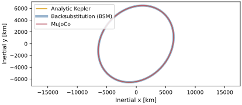
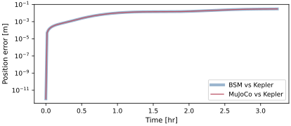
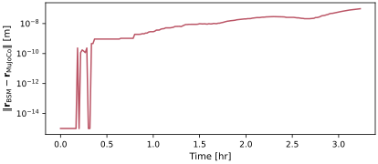

scenarioCompareOrbit
This scenario opens the dynamics-engine comparison series. Basilisk offers two ways to propagate rigid-body dynamics, and this series compares them on equivalent problems of increasing complexity. The two engines are:
The C++ Module: spacecraft DynamicObject (BSM), which uses the back-substitution method. This formulation is hub-centric: one body is the “hub” and carries the 6-DOF rigid-body state, while
StateEffectorsandDynamicEffectorsadd their own degrees of freedom and external loads. Both the hub and the effectors are described in minimal (generalized) coordinates, and their coupled equations of motion are derived analytically and solved each integrator stage by back-substituting the hub acceleration into the effector states.The MJScene DynamicObject, which also uses minimal coordinates but with no privileged hub: bodies are connected by joints, the state is the set of joint coordinates, and the coupled accelerations are produced by MuJoCo’s general recursive multi-body algorithm. See scenarioReactionWheel for an introduction to MJScene.
Both engines are DynamicObject subclasses advanced by the same Basilisk
Runge-Kutta integrator: each exposes an equationsOfMotion that the shared
integrateState steps in time. With matched integrator, time step, initial
conditions, mass properties, and applied forces, any difference between the
trajectories is due to the formulation (hub-centric analytical back-substitution
versus MuJoCo’s recursive multi-body solver), not the time-stepping.
This scenario is the simplest case: a single point-mass spacecraft on
a Keplerian orbit about a point-mass Earth, with no other forces. On the BSM side
this is a C++ Module: spacecraft with a point-mass gravity effector and
pointMassTranslationalOnly enabled. On the MuJoCo side it is a single body with
three orthogonal sliding joints (pure translation, no rotation). Both engines receive
the same Earth descriptor through simIncludeGravBody; for MuJoCo,
gravFactory.addBodiesTo(scene) creates the C++ Module: NBodyGravity model and registers
the scene body as its gravity target.
Both engines integrate \(\ddot{\bf r} = -\mu {\bf r}/|{\bf r}|^3\) with the same RK4 scheme, so each matches the analytic Kepler propagation to the integrator truncation error, and they agree with each other many orders of magnitude below it. The agreement is not bitwise: the BSM effector forms the acceleration directly while MuJoCo forms a force and solves \([M]\ddot{\bf q}={\bf f}\), leaving a small round-off-seeded residual.
The script is found in the folder basilisk/examples/dynamicsComparison and executed
by using:
python3 scenarioCompareOrbit.py
Illustration of Simulation Results
The inertial trajectory of both engines lies on top of the analytic two-body solution.

Each engine matches the analytic Kepler propagation to the RK4 truncation level (centimeters over an aligned, approximately two-orbit horizon at a 10-second step); the two curves are indistinguishable.

The difference between the two engines stays many orders of magnitude below the truncation error, confirming they integrate the same equations of motion.

Runtime cost
Wall-clock cost of propagating this scenario with each engine, reported as the median of five measured trials after one discarded warm-up. Model setup is excluded. Both the absolute times and speedup ratio are specific to the machine and build.
Generate local tables for every accuracy scenario with
make -C docs comparison-runtime-tables from a clean, MuJoCo-enabled
Release build. The CSV files are written under
examples/dynamicsComparison/results and are deliberately not embedded in
the HTML documentation because their absolute values depend on the benchmark
host. The companion paper reports the controlled measurements used for its
performance discussion. Scenario tests validate numerical and figure
behavior; they are not timing benchmarks.
Next comparison: scenarioCompareTorque adds full rotational dynamics and a body-frame torque.
- scenarioCompareOrbit.buildBSM(mass, mu, dt, tf, recordDt, record=True)[source]
Build the back-substitution orbit simulation without propagating it.
- Parameters:
mass (float) – spacecraft mass [kg]
mu (float) – gravitational parameter [m^3/s^2]
dt (float) – integrator time step [s]
tf (float) – final simulation time [s]
recordDt (float) – recorder sampling period [s]
record (bool, optional) – attach the state recorder. Defaults to True.
- Returns:
(simulation, recorder, handles).- Return type:
tuple
- scenarioCompareOrbit.buildMujoco(mu, dt, tf, recordDt, record=True)[source]
Build the MuJoCo orbit simulation without propagating it.
- Parameters:
mu (float) – gravitational parameter [m^3/s^2]
dt (float) – integrator time step [s]
tf (float) – final simulation time [s]
recordDt (float) – recorder sampling period [s]
record (bool, optional) – attach the state recorder. Defaults to True.
- Returns:
(simulation, recorder, handles).- Return type:
tuple
- scenarioCompareOrbit.initialOrbitState(mu)[source]
Return the initial inertial position and velocity and the classical elements.
- Parameters:
mu (float) – gravitational parameter [m^3/s^2]
- Returns:
(rN, vN, oe)with position [m], velocity [m/s], and theClassicElementsobject used to generate them.- Return type:
tuple
- scenarioCompareOrbit.keplerTruth(mu, semiMajorAxis, oe0, times)[source]
Analytic two-body position history at the requested sample times.
- Parameters:
mu (float) – gravitational parameter [m^3/s^2]
semiMajorAxis (float) – orbit semi-major axis [m]
oe0 (ClassicElements) – initial classical orbital elements
times (numpy.ndarray) – sample times [s]
- Returns:
inertial position history, shape
(N, 3)[m].- Return type:
numpy.ndarray
- scenarioCompareOrbit.plotResults(timeAxis, truth, posBSM, posMujoco, errBSM, errMujoco, crossError)[source]
Build the scenario figures.
- Parameters:
timeAxis (numpy.ndarray) – sample times [s]
truth (numpy.ndarray) – analytic position history [m]
posBSM (numpy.ndarray) – BSM position history [m]
posMujoco (numpy.ndarray) – MuJoCo position history [m] (or None)
errBSM (numpy.ndarray) – BSM-vs-analytic error [m]
errMujoco (numpy.ndarray) – MuJoCo-vs-analytic error [m] (or None)
crossError (numpy.ndarray) – BSM-vs-MuJoCo difference [m] (or None)
- Returns:
mapping from figure name to matplotlib figure.
- Return type:
dict
- scenarioCompareOrbit.run(showPlots=False, saveJson=False, saveTiming=False, resultsDir=None)[source]
Main function, see scenario description.
- Parameters:
showPlots (bool, optional) – if True, plot and show the simulation results. Defaults to False.
saveJson (bool, optional) – if True, write a summary of the comparison metrics to
results/scenarioCompareOrbit.json. Defaults to False.saveTiming (bool, optional) – if True, measure the BSM-vs-MJScene wall-clock cost of this scenario and write
results/scenarioCompareOrbit_runtime.csv. Defaults to False.resultsDir (str, optional) – explicit artifact directory. Defaults to the scenario
resultsfolder.
- Returns:
mapping from figure name to matplotlib figure, as expected by the scenario unit test.
- Return type:
dict
- scenarioCompareOrbit.runBSM(mass, mu, dt, tf, recordDt)[source]
Propagate the orbit with the back-substitution C++ Module: spacecraft (BSM).
- scenarioCompareOrbit.runMujoco(mu, dt, tf, recordDt)[source]
Propagate the same orbit with the MJScene.
- scenarioCompareOrbit.writeJsonSummary(timeAxis, errBSM, errMujoco, crossError, mu, posBSM, velBSM, posMujoco, velMujoco, requestedTf, tf, orbitPeriod, targetResults)[source]
Write a JSON summary of the comparison metrics to the
resultsfolder.- Parameters:
timeAxis (numpy.ndarray) – sample times [s]
errBSM (numpy.ndarray) – BSM-vs-analytic position error [m]
errMujoco (numpy.ndarray) – MuJoCo-vs-analytic position error [m]
crossError (numpy.ndarray) – BSM-vs-MuJoCo position difference [m]
mu (float) – gravitational parameter [m^3/s^2]
posBSM (numpy.ndarray) – BSM position history [m]
velBSM (numpy.ndarray) – BSM velocity history [m/s]
posMujoco (numpy.ndarray) – MuJoCo position history [m]
velMujoco (numpy.ndarray) – MuJoCo velocity history [m/s]
requestedTf (float) – requested two-orbit horizon [s]
tf (float) – aligned propagation horizon [s]
orbitPeriod (float) – analytic orbital period [s]
targetResults (str) – directory for the JSON artifact